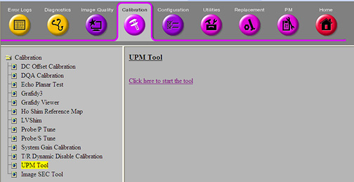

Illustration 5: Universal Power Monitor Tool User Interface

Restricted Service tools are available to GE Field Service only.
Make sure your service key is installed.
From the Calibration menu, select [Calibration Wizard], then click the link: Click here to start this tool.
Once the Calibration Wizard starts, select [UPM Calibration (Head and Body)] from the menu, review and validate the pre and post dependencies.
To start the procedure, click the link: Click here to start this tool. If unable to start the Restricted Service tools, use the non-proprietary method described in the next bullet.
To start non-proprietary service tools:
From the CSD, select the Calibration tab.
From the Calibration menu, select [UPM Tool]
To start the procedure, click the link: Click here to start the tool. (See Illustration 4.) Illustration 5 shows an example of the user interface of the UPM tool.
Illustration 4: Common Service Desktop

Illustration 5: Universal Power Monitor Tool User Interface
| NOTE: | The first time running the UPM Calibration tool after a Load from Cold, if the following error message displays, The spectroRFampType and upm.config do not match!, click File -> Edit Config. When the window opens, click [Restore Defaults] , [Save], and close the window. The tool should now have the correct information so that this pop-up does not display again during future UPM calibrations. |